Parte de afresco em têmpera sobre gesso (c. 1350 a.C.) que apresenta uma cena de caça em parede do túmulo de Nebamun, em Tebas Ocidental (atualmente no British Museum).
Ivy Close Images/AGB Photo Library
A Antiguidade foi um período de construção de grandes monumentos, de criações artísticas profundamente relacionadas aos aspectos espirituais do ser humano. Este capítulo é dedicado ao estudo da arte que se desenvolveu na Mesopotâmia (atualmente parte do Oriente Médio) e no Egito, durante o período da Antiguidade, que se estende de 3500 a.C. a 500 a.C. A maior parte dos povos que viviam nessa área geográfica era adepta do politeísmo (crença religiosa em mais de um deus ou deus e atribuía aos deuses ou deusas um poder sobre as atividades humanas e as forças da natureza. Além dos deuses, que eram muito associados aos animais, havia deuses-heróis humanos e curiosas superstições baseadas nas estrelas. Os egípcios – diferentemente dos povos mesopotâmicos – tinham uma fé intensa na vida após a morte.
- Como a narrativa visual foi utilizada pelos povos da Antiguidade para contar histórias de deuses, faraós e heróis?
- De que forma os governantes desses povos expressaram seu poder nos retratos, nas narrativas históricas e nas grandes construções?
- Como se desenvolveu a arquitetura na Antiguidade?
Neste capítulo, serão abordadas as habilidades EM13LGG601, EM13LGG602, EM13LGG603 e EM13LGG604.
A Antiguidade Oriental na Mesopotâmia
Os povos que habitavam grande parte do Oriente Médio já tinham dominado a cultura dos grãos na região conhecida como Crescente Fértil bem antes do desenvolvimento das comunidades agrícolas na Europa. Por volta do sexto e do quinto milênio antes de Cristo, a agricultura desenvolveu-se nessa área, que engloba as terras férteis entre os rios Tigre e Eufrates. Os gregos denominaram essa região de Mesopotâmia (que significa “terra entre rios”), a qual incluía parte da Pérsia (atual Irã) e a região próxima ao Mediterrâneo (atuais Egito, Israel, Jordânia, Líbano etc.).
.png)
A arte da Mesopotâmia é marcada por uma linguagem visual simbólica e sofisticada que comunicava e celebrava a estratificação política e social da época, atribuindo a esta a ordem e a segurança conquistadas pelos diferentes impérios. Os personagens representados pelos artistas mesopotâmicos, de forma geral, obedecem a uma escala hierática, isto é, o tamanho do personagem em relação aos demais na composição indica a sua importância. Quanto maior ou quanto mais alta for a sua posição na composição, maiores são sua influência, seu prestígio e/ou seu valor.
A imagem apresenta uma estela, isto é, uma pedra monolítica individual em que se faziam esculturas ou se escreviam textos. Data de aproximadamente 2254 a.C.-2218 a.C., no tempo do Império Acadiano.Essa estela foi esculpida em calcário rosa, tem 2 metros de altura e faz parte da coleção do Museu do Louvre.
Arte dos sumérios
Os sumérios viveram em cidades ou cidades-Estado ao sul da Mesopotâmia entre os anos 3500 a.C. e 2340 a.C. São considerados pioneiros na invenção da roda de carroça, do arado, do cobre e da fundição em bronze. Uma de suas maiores contribuições para as civilizações posteriores foi a criação de um sistema primitivo de escrita em placas de argila, desenvolvido por volta de 3100 a.C., aparentemente para contar os bens negociados nas cidades. Eles desenhavam figuras por meio de pictografias com um instrumento pontudo sobre a argila ainda molhada. Cada figura pictográfica representava um objeto ou conceito. Com o passar dos séculos essa escrita evoluiu e, entre 2900 a.C. e 2400 a.C., transformou-se em fonograma, um verdadeiro sistema de escrita. Esse sistema, conhecido como cuneiforme (por utilizar objetos em formato de cunh, caracterizou a escrita dos povos mesopotâmicos de forma geral.
Na arquitetura, as edificações mais proeminentes da cultura suméria foram os zigurates. Eram monumentos em forma de pirâmide, com patamares sobrepostos. Eles se elevavam sobre as planícies da região, proclamando a riqueza, o prestígio e a estabilidade dos governantes das cidades, além de glorificar os seus deuses. Cada cidade tinha uma divindade, ou seja, seu deus ou sua deusa, e os habitantes acreditavam que o destino da cidade dependia do poder dessa deidade. Dois complexos de templos ficavam em Uruk (atual Warka, no Iraqu. Um deles era dedicado a Anu, deus do Sol, e o outro a Inanna, deusa do amor e da guerra. O zigurate de Anu, com uma altura de 12 metros (equivalentente a um prédio de quatro andares), tem uma parte no topo que foi construída, por volta de 3100 a.C., com tijolos brancos, que os arqueólogos chamaram de Templo Branco.

Zigurate da antiga cidade de Ur (c. 2100 a.C.), nas proximidades da atual cidade de Nassíria, Iraque.
HomoCosmicos/iStockphoto.com
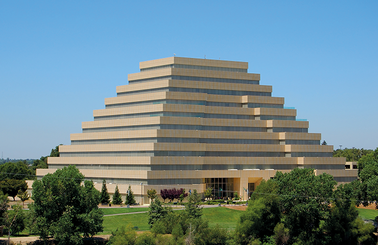A arquitetura busca sempre inspiração no passado, como mostra essa construção em forma de zigurate em Sacramento, nos Estados Unidos.
Andrew Zarivny/Shutterstock.com
... a escrita suméria foi responsável pela divisão clássica entre História e Pré-história, pois foi graças ao sistema de escrita que se tornou possível relatar o passado dos povos antigos.
Estatueta de Ebih-II, nu-banda, c. 2400 a.C.,Templo de Ishtar. Alabastro, lápis-lazúli. 52,50 cm x 20,60 cm. Museu do Louvre, Paris, França.
Jastrow (CC BY-2.5)/Wikimedia Commons
Os sumérios ricos costumavam encomendar imagens de si mesmos, para que fossem colocadas em um santuário à frente da imagem maior do deus que adoravam. O objetivo era obter proteção e/ou favores divinos. Os escultores dessas imagens, chamadas oferendas ou figuras votivas (dedicadas aos deuses), seguiam algumas convenções. Por exemplo, a face, o corpo e a roupa eram estilizados e simplificados de modo a enfatizar a forma cilíndrica das figuras, que podiam ser tanto masculinas quanto femininas. Os homens, como o da imagem, vestiam uma saia pregueada de pele de carneiro e tinham o peito descoberto. Todas as figuras apresentam olhos atentos e uma pose solene, com as mãos entrecruzadas à frente do peito em sinal de respeito.
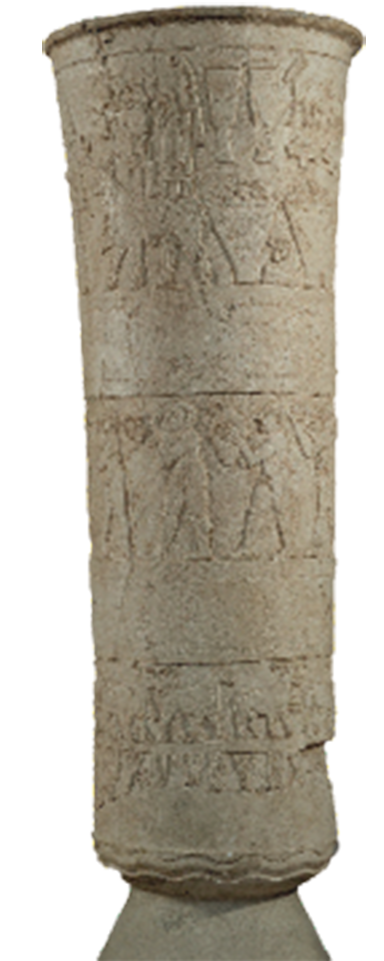Autor desconhecido. Vaso de Warka, c. 3200 a.C.-2900 a.C., escultura. Museu Nacional do Iraque, Bagdá, Iraque.
Erich Lessing/Album/Fotoarena
Outro tipo de escultura feita nesse período era a de baixo-relevo. Um exemplo é o Vaso de Warka, esculpido em pedra de alabastro (uma pedra esbranquiçada e maci, encontrado no complexo de templos da deusa suméria Inanna, nas ruínas da antiga cidade de Uruk, localizada na atual província de Al-Muthanna, no sul do Iraque. É uma das primeiras obras remanescentes da escultura de relevo narrativo, datada de c. 3200 a.C.-2900 a.C. Ela demonstra como os escultores desse período e de pelo menos 2 500 anos posteriores narravam histórias por meio das esculturas em relevo, uma prática bastante utilizada também durante a Idade Média. A parte inferior da escultura mostra a forma natural das origens do mundo, com plantas, água e animais. No centro da peça, homens despidos carregam cestos com alimentos e, na parte superior, a deusa Inanna aceita as oferendas de duas figuras em pé.
... as tabuletas de argila que fazem parte da literatura dos sumérios, provavelmente a primeira na história da humanidade, inauguram a tradição intelectual do Oriente e do Ocidente. Entre as obras mais conhecidas dessa literatura, escrito em milhares de tabuletas, está o Épico de Gilgamesh. .
Observe a imagem ao lado e leia sobre a sua história. Quais semelhanças são possíveis de estabelecer entre esses pequenos quadros e as histórias narrativas do nosso tempo? Explique.
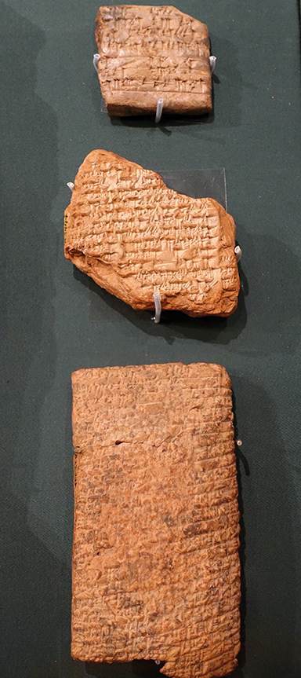Tabuletas com a história de Gilgamesh.
Oriental Institute Museum, Illinois. Foto: Daderot/Wikimedia Commons
Observe a imagem ao lado e leia sobre a sua história. Quais semelhanças são possíveis de estabelecer entre esses pequenos quadros e as histórias narrativas do nosso tempo? Explique.
A imagem é de um detalhe da caixa acústica de uma lira (instrumento musical) que data de 2600 a.C.-2500 a.C. Nela, estão retratadas cenas do poema Épico de Gilgamesh, rico em detalhes de feitos heroicos e fabulosas criaturas. Trata-se de um personagem histórico que viveu por volta de 2700 a.C., tendo reinado em Uruk (Erech descrita na Bíbli. Como a história só foi inscrita em uma série de tabuletas 700 anos depois, é provável que as imagens da caixa da lira se baseiem na tradição oral.
São quatro cenas. Na primeira, de cima para baixo, Gilgamesh está entre dois touros com cabeça humana e chifres, os quais o herói controla.
Na segunda, uma hiena e um leão parecem levar bebidas e alimentos para um banquete. A hiena parece um açougueiro, com uma faca presa a um cinto, e segura uma mesa com carne. O leão, por sua vez, carrega um grande jarro e uma vasilha.
Na terceira imagem, a lira que está sendo tocada é semelhante àquelas encontradas nas câmaras mortuárias reais. Isso sugere que a imagem de festa e performance musical pode representar um banquete funeral em homenagem aos mortos. Os animais parecem ser os tradicionais guardiões dos portais através dos quais os mortos têm de passar.
Na cena inferior, Gilgamesh encontra o homem-escorpião ao passar por regiões hostis durante a sua jornada épica.
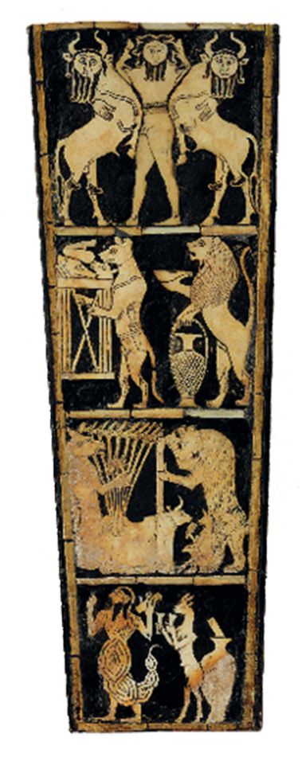
Épico de Gilgamesh representado sobre madeira com conchas embutidas em betume.
British Museum/University Museum Expedition to Ur, Iraque, 1928.
Mãos à obra
A obra Épico de Gilgamesh conta a história de um rei-herói que passou por diversas aventuras em sua jornada que o levaram a questionar até o significado da existência humana. Inspire-se nessas cenas e no estilo pictórico dos sumérios, mais estilizado e com traços simplificados, crie uma sequência narrativa em quatro quadros. Ela deve conter a história de um personagem do contexto em que você vive, que tenha realizado algum feito memorável. Ao fazer a representação, insira elementos simbólicos que remetam a uma característica do cotidiano do personagem, como o leão branco da imagem ao lado.
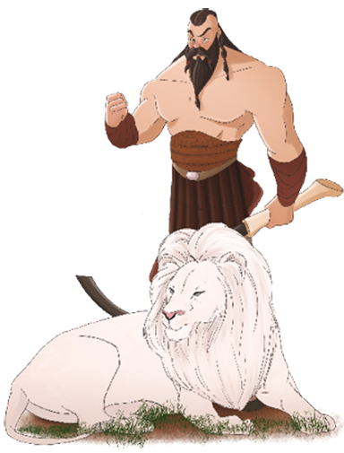Representação contemporânea de Gilgamesh.
A Babilônia
Os conflitos na região entre os rios Tigre e Eufrates foram constantes nos milênios antes da Era Cristã. Em meio às turbulências políticas, povos do deserto se juntaram aos sumérios sob o reinado de Hamurabi (1792 a.C. a 1750 a.C.). A capital desse reino era a Babilônia e seus cidadãos ficaram conhecidos como babilônios. Uma das realizações de Hamurabi foi a criação de um código com diversas leis e suas respectivas penalidades para quem as quebrasse. O código foi gravado em escrita cuneiforme sobre pedra. Observe que no topo do Código de Hamurabi está o governante em pé diante do trono de Shamash. Este era o supremo juiz e deus do Sol para os babilônios, além de patrono da lei e da justiça.
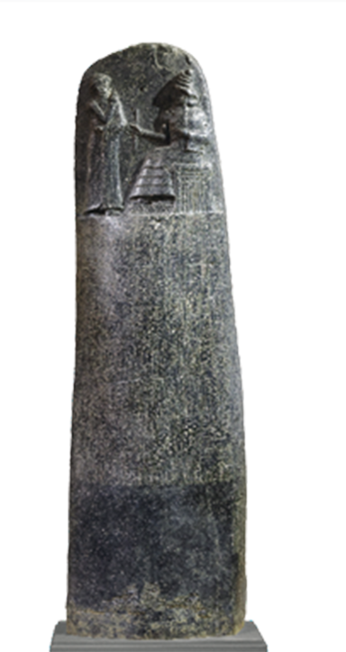Autor desconhecido. Código de Hamurabi, 1792 a.C.-1750 a.C., entalhe em basalto. Museu do Louvre, Paris, França.
Dima Moroz/Shutterstock.com
Autor desconhecido. Leão alado com cabeça humana (lamassu), c. 859 a.C.-83 a.C., escultura assíria em alto-relevo inscrita em pedra de gipsita/alabastro, c. 883 a.C.-859 a.C.,311,2 cm x 62,2 cm x 276,9 cm, Metropolitan Museum of Art, Nova York. Em alguns relatos, os lamassus são descritos como animais alados (touros e leões) com cabeças humanas. Eram criaturas lendárias, retratadas geralmente em pares, que guardavam a entrada dos templos.
No Código de Hamurabi, as punições eram baseadas na riqueza, posição social e gênero daquele que havia cometido o delito. Os direitos dos ricos prevaleciam sobre os dos pobres, os dos cidadãos livres sobre os dos escravos, os dos homens sobre os das mulheres.
Os assírios
Os assírios dominaram o norte da Mesopotâmia por volta de 1400 a.C. echegaram a controlar a maior parte da região no final do século IX a.C.,subjugando inclusive os babilônios. Fortemente influenciados pela cultura suméria, preservaram os zigurates e os textos dos sumérios. Os governantes assírios construíram capitais fortificadas onde edificaram palácios com paredes decoradas e relevos em pedra. Elas contêm cenas de batalhas e de caça, além de representações da vida da realeza e do universo religioso. Nos maiores portais de suas fortificações havia figuras colossais chamadas lamassus, além de painéis esculpidos em baixo-relevo, que cobriam as paredes. Observe um exemplo dessas figuras na imagem da sala do Metropolitan Museum of Art de Nova York.

Rockefeller Jr, Gift of John D./Metropolitan Museum of Art
A Babilônia ressurge em todo o seu esplendor
No final do século VII a.C., os babilônios, associados a diversos povos da região, invadiram a Assíria. Capturaram a cidade de Nínive em 612 a.C. e iniciaram um novo período dessa civilização, que atingiu grande esplendor e prosperidade. O mais famoso governante dessa nova fase foi Nabucodonosor II, que governou de 605 a.C. a 562 a.C. Como grande patrono da arquitetura, mandou construir templos em todo o seu reino e transformou a Babilônia em uma das mais esplêndidas cidades de seu tempo. No acesso principal da cidade, a Porta de Ishtar (575 a.C.) simbolizava o poder babilônico.
Observe a imagem: a porta tem duas torres recobertas com tijolos azulejados e coloridos, nos quais há faixas de baixo-relevo com representação de animais.
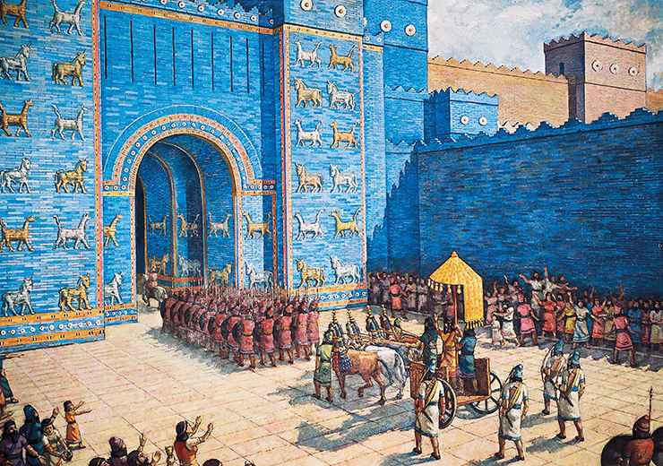Reconstrução gráfica da Babilônia.
De Agostini/Getty Images 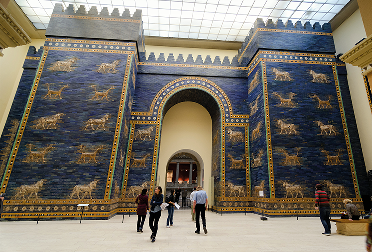
Réplica da Porta de Ishtar com tijolos originais, no Pergamonmuseum, Berlim.
villorejo/Shutterstock.com
Por dentro da arte
O processo de restauração em arte é bastante complexo e delicado. Pode ser feito sobre a própria obra ou com base em uma imagem. No primeiro caso, a restauração busca o retorno de um trabalho de arte (tela, mural, parte de um sítio arqueológico, obra de arquitetura, entre outros) a um estado próximo ao do original. Já no caso da criação de uma imagem (como a reconstrução gráfica da Babilôni, buscou-se representar um trabalho da forma mais fiel possível à original. Tais procedimentos são realizados com o objetivo de preservar o trabalho artístico para as futuras gerações, de melhorar a aparência de uma obra ou de representar de forma mais precisa seu aspecto original.
A restauração do objeto de arte é controversa. Muitas vezes envolve mudanças que podem ser irreversíveis. Existem diversas técnicas de restauração, como a remoção de impurezas que se acumularam sobre o trabalho ao longo do tempo ou a aplicação de tinta aquarela para recuperação de afrescos. Esta última foi aplicada, por exemplo, na restauração de A última ceia, de Leonardo da Vinci, e é facilmente reversível. Em alguns casos, o objeto original é transferido para um museu (onde haja condições climatizadas e de segurança propícias à manutenção) e substituído por uma cópia. Algumas vezes, o objeto faz parte do acervo de instituições que não têm os recursos materiais necessários para o processo de restauração e precisam de ajuda externa.
Na arquitetura, existem profissionais dedicados à recriação, em ilustração, do aspecto original de uma construção, cidade ou de um local histórico. Esse profissional (um arquiteto ou ilustrador) baseia-se em evidências arqueológicas e em informações precisas e selecionadas. Pode também se basear em informações locais, publicações e imagens visuais, assim como em fragmentos arquitetônicos de outros locais ou períodos. Esse processo exige também um exercício de imaginação.
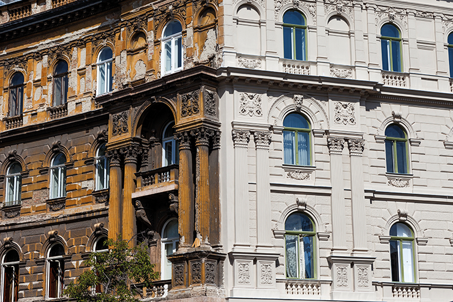Antes e depois da restauração da fachada de um dos prédios de Caserma Sacchi, complexo de prédios históricos em Caserta, Itália.
StockStudio/Shutterstock.com
Autor desconhecido. Retrato do Visconde de Magé, início do século XX, óleo sobre tela.
Coleção particular.
Acervo pessoal de André Ricardo Teixeira Netto. Bandeira.
Foto: Restaurador Mauro Bandeira.
Restauração de obra de arte: indispensável ou necessária?
Existe, em sua cidade ou região, alguma obra de arte (pintura, edifício histórico, escultura em uma praça etc.) que precise ser restaurada? Qual? Por quê?
Há preocupação, em sua cidade ou região, com a preservação de obras de arte como edifícios arquitetônicos históricos e esculturas? Explique.
Egito
Quando falamos de Egito Antigo, em geral, nos vêm à mente as imagens das pirâmides, que fizeram grande sucesso nesse período. Mas qual era a finalidade delas? As pirâmides eram colossais monumentos funerários construídos a fim de garantir para a eternidade a preservação dos corpos dos reis falecidos. A construção tinha, inclusive, um direcionamento estratégico para as estrelas polares, a fim de que as almas dos reis pudessem se orientar por elas. Os faraós realizaram esses monumentos com o trabalho de inúmeros escravos, que transportavam e posicionavam os blocos de pedras de grandes dimensões. Além das pirâmides, as tumbas, os hipogeus (templos subterrâneos), e as mastabas faziam parte do complexo funerário chamado necrópole.
A arte egípcia, como a maior parte das criações de outras civilizações desse período e região, concentrava-se na representação das divindades –em geral de aspecto zoomórfico – ou na vida dos monarcas e faraós (título atribuído aos reis a partir de 3150 a.C., indicando seus atributos divinos). No Egito Antigo, período chamado de Dinástico, com a época anterior conhecida como Pré-Dinástica, os faraós tinham amplos poderes políticos e religiosos. Eram considerados quase deuses, e sua figura dominava. Como a maior parte das manifestações artísticas egípcias era voltada para a vida após a morte, é comum encontrar a arte desse povo em monumentos fúnebres. As cenas representadas nas tumbas eram criadas para que o morto pudesse se recordar de sua vida na Terra quando tivesse passado para o outro plano. Assim, faziam-se pinturas e esculturas que representassem e enaltecessem o morto, em situações que havia vivenciado (não necessariamente pessoais), como caçadas, colheitas, passeios etc.
O faraó sempre aparecia nas representações como a figura maior e mais importante, por ser associado aos deuses. Nas pinturas e esculturas, a proporção era um aspecto marcante, de modo que quanto maior a representação de um indivíduo, maior era o seu status. Por exemplo, membros da elite e sacerdotes eram menores que o faraó, e os escravos ainda menores. Os inimigos eram sempre representados em situações de submissão, pedindo piedade, sendo decapitados, entre outras. As árvores e os detalhes da arquitetura também eram representados em tamanho menor, mas cabe ressaltar que as árvores, principalmente as frutíferas, o plantio e a colheita estavam no centro da sobrevivência em uma região desértica e indicavam abundância. Como podemos observar a seguir, a simbologia atribuída aos animais era bastante comum na arte egípcia, como é o caso do falcão, frequentemente utilizado como imagem do soberano.
Os artistas egípcios não buscavam criar cópias perfeitas daquilo que observavam. A razão para isso não era o fato de serem incapazes, mas a intenção de representar aquilo que era julgado importante, da forma que ficasse mais inteligível. Suas pinturas tinham apenas duas dimensões (largura e altura, sem profundidad e seguiam padrões rígidos preestabelecidos (distância entre os pés em uma passada, proporções das partes do corpo etc.).
O mais famoso aspecto da pintura é a chamada lei da frontalidade, também conhecida como visão compósita, em que a cabeça e as pernas são representadas de perfil, e os olhos, ombros e braços, frontalmente.
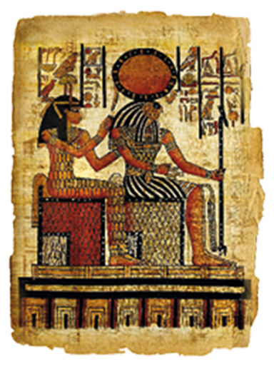O deus egípcio Rá, deus do Sol, com disco solar sobre a cabeça (aquele que ilumina o rio Nilo, a Terra e os homens), e a deusa Imentet (do Ocident em pintura na câmara mortuária da rainha Nefertari. O deus Rá é associado ao falcão ou ao gavião.
leoks/Shutterstock.com

A esfinge de Gizé e a pirâmide de Quéops, ao fundo (também chamada de Grande Pirâmid, fazem parte da necrópole de Gizé, um complexo funerário que envolve três pirâmides e foi construído no período de 2570 a.C. a 1300 a.C.
pius99/iStockphoto.com
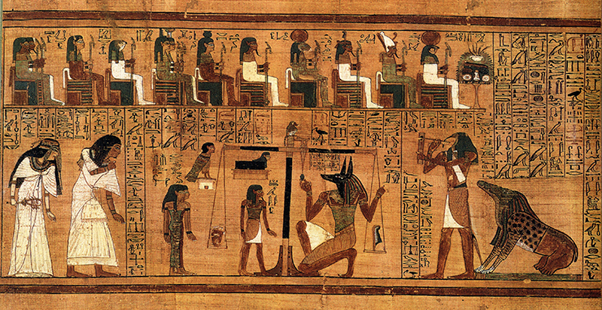Autor desconhecido. Papiro de Ani, c. 1300 a.C, pintura sobre papiro. British Museum, Londres, Inglaterra. A pesagem do coração do Livro dos Mortos de Ani. À esquerda, Ani e sua esposa Tutu entram na assembleia dos deuses. No centro, Anúbis (com cabeça de chacal) pesa o coração de Ani contra a pena de Maat, sendo observado pelas deusas Renenutet e Meskhenet, o deus Shay e a própria personalidade (bâ) de Ani. À direita, o monstro Ammut, que devorará a alma de Ani se ele for indigno, aguarda o veredicto, enquanto o deus Tot se prepara para registrá-lo. No topo, estão alguns deuses atuando como juízes: Hu e Sia, Hator, Hórus, Ísis e Néftis, Nut, Geb, Tefnut, Shu, Atum e Rá-Horakhty.
British Museum, Londres
O mistério de Tutankamon: os grandes egípcios, Discovery Civilization Channel, 2014.
O documentário sobre o grande rei Tutancâmon trata da descoberta de sua tumba intacta, considerada o maior achado arqueológico da história. Tutancâmon se tornou um nome famoso. Seus tesouros também são conhecidos, mas pouco se fala de sua trágica infância. Nesse documentário, a arte egípcia é analisada sob aspectos históricos.
Disponível em: https://www.youtube.com/watch?v=OdcC4ph8cCU.